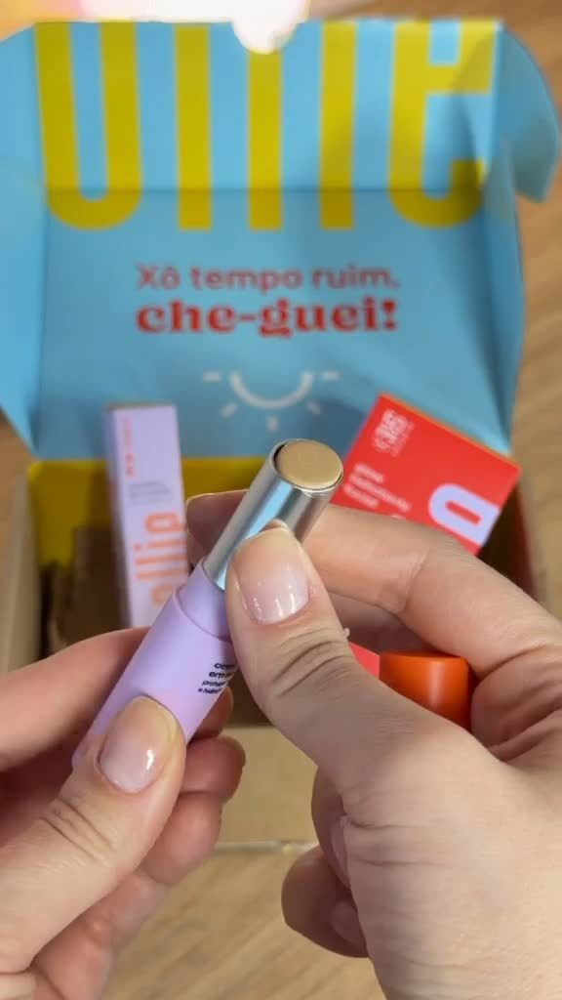
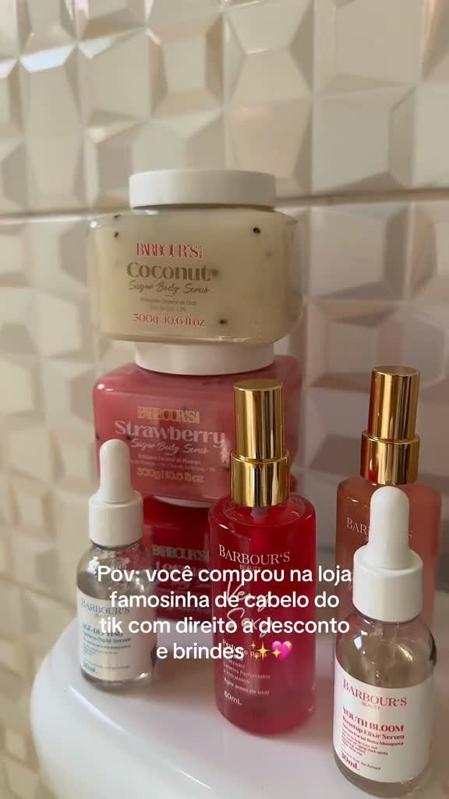
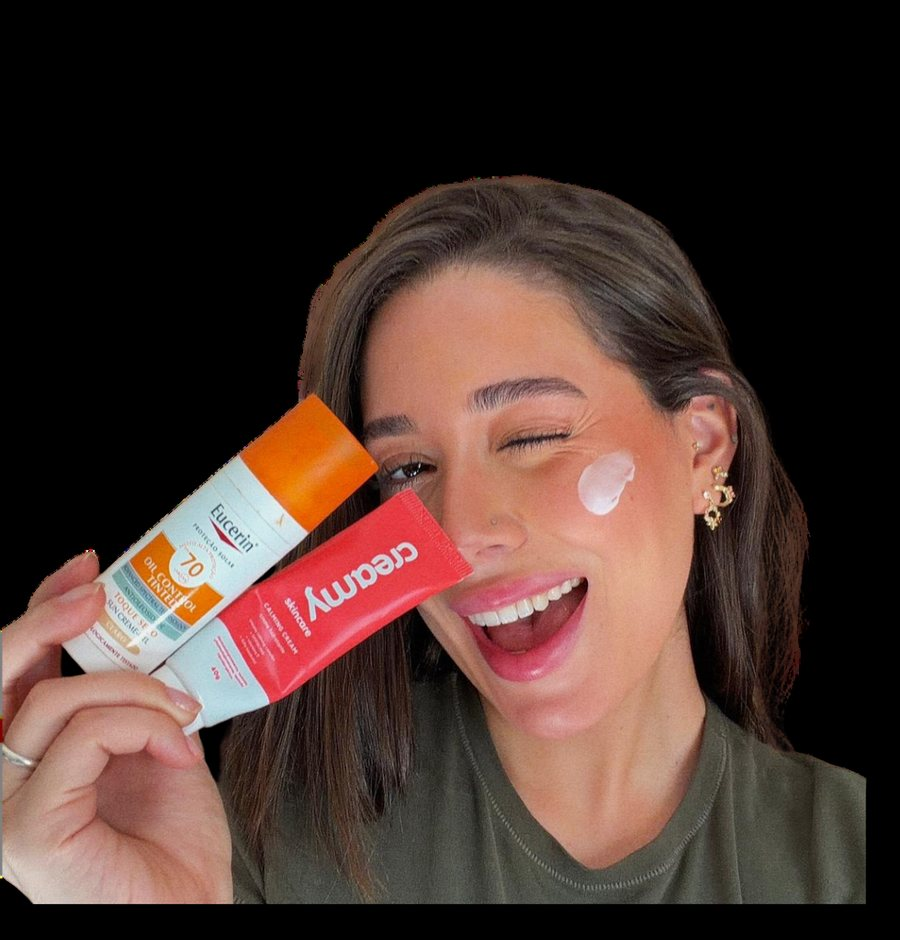
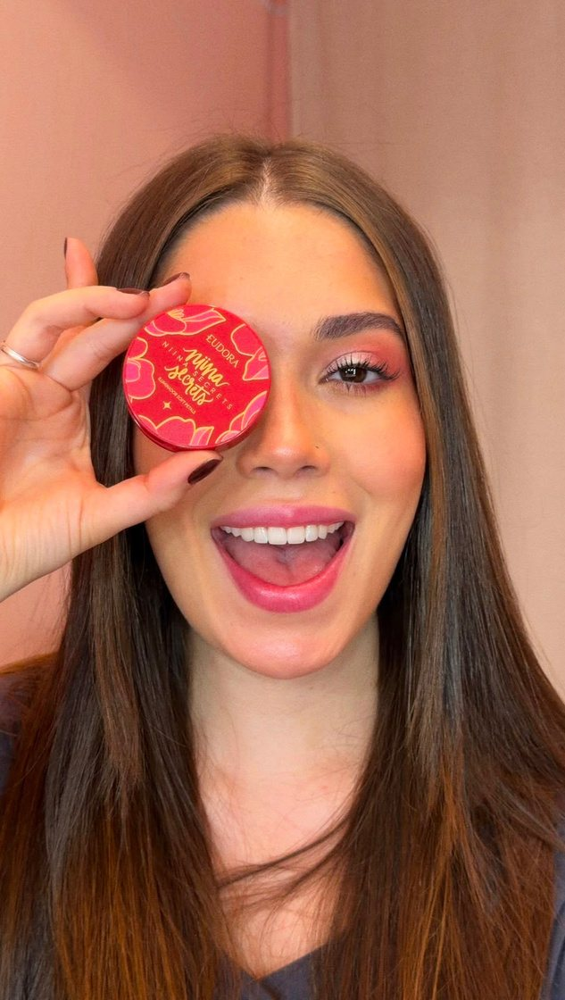

Conteúdos que fazem sua marca deixar de ser produto e virar presença na rotina.
Tenho 26 anos, sou de São Paulo e atuo há mais de 7 anos com marketing estratégico e criação de conteúdo, com foco em comportamento do consumidor.
Fui dona de loja de roupa e foi ali que aprendi, na prática, como funciona a cabeça de quem compra. Hoje aplico esse olhar em cada conteúdo que crio.
Meu trabalho vai além de gravar um vídeo bonito. Eu penso estrategicamente em como fazer o consumidor final imaginar aquele produto na própria rotina antes mesmo de comprar — respeitando o branding e o tom de voz de cada marca.
Produção de vídeos para uso nos canais próprios da marca, conteúdos pensados estrategicamente para posicionamento, construção de credibilidade, percepção de valor e apoio direto à decisão de compra. O foco é gerar identificação real com o consumidor: fazer com que ele se enxergue usando o produto e enxergue o consumo como uma possibilidade concreta em sua própria rotina. Esse formato funciona como vantagem competitiva, aproximando a marca do público e reduzindo objeções no processo de escolha.
Produção de conteúdo para minhas próprias redes sociais, com opção de Collab. Estruturado para educar, gerar confiança e tirar dúvidas do consumidor sem parecer publicidade tradicional. O objetivo aqui não é vender diretamente, mas construir marca e posicionamento de forma orgânica, aproveitando a credibilidade já construída com minha audiência.
Conteúdos direcionados exclusivamente ao produto, com uma leitura visual objetiva de seus principais atributos, diferenciais e das dúvidas mais comuns do consumidor dentro do anúncio. Criados para agilizar a decisão de compra, diminuir objeções e funcionar como diferencial competitivo direto na peça publicitária.
Conteúdos criados com foco direto em conversão e vendas dentro da própria plataforma. Desenvolvidos a partir da leitura do produto, do comportamento do consumidor e de performance, facilitando a decisão de compra no ambiente de social commerce.
Vídeos estratégicos criados para atender os objetivos da marca, seja vendas, posicionamento ou reconhecimento. Possuem roteiro, storytelling e comunicação alinhados à identidade da empresa.
Vídeos curtos para anúncios, com foco total no produto. Possuem edição simples, falando sobre dúvidas e características do produto potencializando resultados.
Vídeos focados em vendas dentro do TikTok. Utilizam uma linguagem e edição de maneira natural e uma estrutura voltada para conversão, com gancho, desenvolvimento e CTA.


Vitrine em atualização — os logos das marcas com quem já trabalhei e trabalho entram na próxima fase.

Estudo da marca, histórico de conteúdos e momento atual para identificar oportunidades e direcionar a comunicação. Definição do direcionamento estratégico com base nos objetivos da marca, garantindo clareza e intenção em cada conteúdo. Validação e ajustes com a marca, incluindo reuniões quando necessário, alinhando expectativas e execução.
Gestão completa do projeto: prazos, formatos, volumes, contratos e alinhamento com orçamento e necessidades da marca. Desenvolvimento de roteiros e ideias alinhados à estratégia, estruturando conteúdos com foco em conexão e performance. Validação e ajustes ao longo do processo, com reuniões quando necessário, mantendo objetivos, expectativas e execução conectados.
Captação e execução dos conteúdos conforme o planejamento, com consistência e qualidade na entrega. Finalização com suporte de equipe especializada, garantindo comunicação eficiente e alto padrão visual.
Envio final dos conteúdos.
Observação: métricas completas são apresentadas conforme o escopo do projeto.
Conteúdos que fazem sua marca deixar de ser produto e virar presença na rotina.
